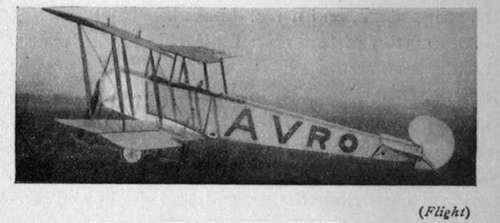

Why An Aeroplane Flies. Part 4
Description
This section is from the book "All About Flying", by Gertrude Bacon. Also available from Amazon: All About Flying.
Why An Aeroplane Flies. Part 4
In any case, automatically or otherwise, the planes lie flatter in the air as the speed increases until, at the greatest speeds, the leading edge may be actually lower than the trailing edge. When this happens the plane is said to be at a ? negative angle.' Of course there is a limit in this direction. An aeroplane that is being forced to fly horizontally at a speed beyond what it is designed for begins to 'hunt' —that is to say, it has a continual tendency to dive downwards or shoot upwards, and so pursues a disconcertingly wavy track across the sky.
In speaking of the speed of a flying machine we must always bear in mind that we mean speed in relation to the air it is passing through, and not the ground that it is covering. Imagine a 20-mile wind blowing over an aerodrome, and an aeroplane travelling at 50 miles an hour flying dead into it. Obviously to a man standing underneath it is only passing by at 30 miles an hour. But wait until the machine has rounded the pylon at the end of the course, and comes tearing back with the wind behind ; then the observer will see it flash over his head at 70 miles an hour, and yet all the while its own speed has never varied.
Avro Tractor Biplane.
In the bygone days of aviation—which are really very recent days as far as mere time goes—how often has one heard the remark, 'Ah! but flying will always be terribly risky work because, if your engine stops while you are in the air, where are you ? '(The speaker implying that he knew quite well where you would be—smashed to little bits on the ground.) The particular brand of old gentleman who talks like this is even now not wholly extinct, but he is wholly wrong in his premises. To his incorrect way of thinking it is the forward motion of the aeroplane that alone supports it in the air, whereas, as we now know, it is supported also by the size, shape and adjustment of its planes. When a parachute is dropped from a balloon it falls first like a stone until the pressure of the air underneath it begins to open it out as an umbrella. Beneath its wide, curving surface it catches and compresses a large quantity of air, until the resistance of this air-cushion becomes equal to the rate of fall, or acceleration, and after that it no longer falls quicker and quicker but descends at an even rate. The planes of an aeroplane are not, of course, large or light enough to act as parachute to the great weight of a flying machine; but the aeroplane is none the less safe on that account. An aeroplane with engine stopped becomes simply a glider, possessing its own gliding angle which varies with the particular machine ; and as long as it is put into and held at this particular angle (and a well-designed aeroplane will take and keep its gliding angle of its own accord) it will glide down from the sky at a speed dependent upon the resistance it offers to the air and which does not increase. This gliding flight with engine stopped is 'vol plane,' and we shall enlarge upon it in a later chapter.
So far then we have gone some considerable distance in learning how to make a flying machine. We have learned that in order to fly we must provide ourselves with light supporting surfaces, or planes, set at a small angle to the horizontal and driven rapidly through the air. We have also realized that to get the greatest lifting efficiency out of these planes we must curve them in a particular fashion and construct them of a particular shape. But we have to do more than this ; much more. We have not only to get our flying machine into the air but we have got to keep it there. We have got to prevent it from rolling over sideways, from pitching downwards on its nose, or sliding backwards on its tail, or combining most of these motions in a spiral spin. We have got to make it capable of withstanding the buffeting of the winds, the sudden side gusts, the unforeseen eddies, the rising and descending currents, the different densities of stratas of air that it will meet with in its passage through the sky;—in a word, we must give it stability. We must also provide it with means for steering its course in the air.
It was the birds who first pointed out that the best way to prevent pitching up and down in the sky was to have a tail sticking out at the back. The pressure of the air on a smaller plane fixed some distance behind puts the brake on any oscillations in a vertical direction that the main planes may indulge in; and within certain limits the further back the tail is placed the more effect does it have. The form of the tail plane and the angle at which it is fixed are matters of prime importance to the balance of the machine. Although the difference is so small that the fact may not be visible to the eye, the tail plane is not set at the same angle as the main plane, but at a lesser one. This fact helps to give lateral stability, and is known as the 1 fore-and-aft dihedral,' In some machines the tail plane is cambered like the wings. It is then said to be a' lifting' tail, for it helps to support the weight in flight; in others it is flat, and therefore 'non-lifting,'
Practically all aeroplanes nowadays have tails. The original flying machines made by the Wright Brothers in America—the first aeroplanes that ever flew—had no tails, and were kept horizontally stable merely by working the elevator (a large biplane one) placed in front. The old Wright machines, therefore, were lacking in 'natural stability,' and were in consequence hard to learn to fly ; although their pilots claimed for them that once mastered, they were easier to control than any others. Nevertheless the Wright machines have since come into line with the rest, and have done away with elevator in front and put it as a tail behind.
Every aeroplane possesses an elevator—a smaller movable plane, or planes, placed horizontally out at the front or back of the main planes. By raising or depressing the elevator the nose of the machine is tilted upwards or downwards; the angle of incidence is thus slightly altered and the machine rises or falls in the air. In early biplanes this elevator was almost invariably put in front, or there were two elevator planes, one in the front and the other in the tail. Modern practice, with a few notable exceptions, has been to take the elevator away from the front altogether and place it as a flap in the tail. In monoplanes, of course, the elevator has always been in the tail.
Continue to: